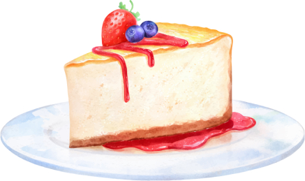

Fruit Cake
This red fruit cheesecake recipe is simply delicious! The combination of the sweet strawberry with the slightly acidic flavor of the blueberry creates a fresh and balanced dessert. Furthermore, the creamy texture of the cheesecake contrasts perfectly with the crunchiness of the cookie base. If you are looking for an easy dessert to make that will impress your guests, this is the ideal recipe.
Method of preparation
Ingredients:
- 200g cornstarch biscuits
- 100g of butter
- 300g cream cheese
- 1 can of condensed milk
- 1/2 cup lemon juice
- 1 tablespoon colorless gelatin powder
- 1 cup chopped strawberries
- 1 cup of blueberries
Method of preparation:
- Crush the biscuits and mix with the melted butter. Line a mold and refrigerate.
- Beat cream cheese, condensed milk and lemon juice. Add the dissolved gelatin.
- Pour over the biscuit base and refrigerate for 2 hours.
- Top with fruit and serve chilled.